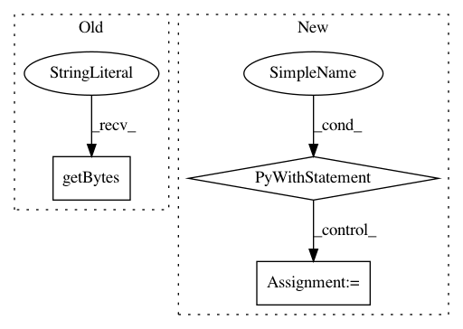

44be9703a0744caf78b8b61319be0db281e91d6a,skopt/tests/test_space.py,,test_space_from_yaml,#,488
Before Change
def test_space_from_yaml():
tmp_file = NamedTemporaryFile(delete=False)
tmp_file_path = tmp_file.name
tmp_file.write(b
Space:
- Real:
low: 0.0
high: 1.0
- Integer:
low: -5
high: 5
- Categorical:
categories:
- a
- b
- c
- Real:
low: 1.0
high: 5.0
prior: log-uniform
- Categorical:
categories:
- e
- f
)
tmp_file.close()
space = Space([(0.0, 1.0), (-5, 5),
After Change
@pytest.mark.fast_test
def test_space_from_yaml():
with NamedTemporaryFile() as tmp:
tmp.write(b
Space:
- Real:
low: 0.0
high: 1.0
- Integer:
low: -5
high: 5
- Categorical:
categories:
- a
- b
- c
- Real:
low: 1.0
high: 5.0
prior: log-uniform
- Categorical:
categories:
- e
- f
)
tmp.flush()
space = Space([(0.0, 1.0),
(-5, 5),
("a", "b", "c"),
(1.0, 5.0, "log-uniform"),
("e", "f")])
space2 = Space.from_yaml(tmp.name)
assert_equal(space, space2)
In pattern: SUPERPATTERN
Frequency: 3
Non-data size: 3
Instances
Project Name: scikit-optimize/scikit-optimize
Commit Name: 44be9703a0744caf78b8b61319be0db281e91d6a
Time: 2018-04-06
Author: scott_graham@bose.com
File Name: skopt/tests/test_space.py
Class Name:
Method Name: test_space_from_yaml
Project Name: tensorflow/transform
Commit Name: cb7c20f6ad714f0b016a874b2b06a9fbed4e0a59
Time: 2020-07-16
Author: zoy@google.com
File Name: tensorflow_transform/test_case.py
Class Name: TransformTestCase
Method Name: AssertVocabularyContents
Project Name: lanpa/tensorboardX
Commit Name: f4a6c738beabc312a848804e5c4d4f384919f026
Time: 2020-06-29
Author: prafullasd@gmail.com
File Name: tensorboardX/summary.py
Class Name:
Method Name: audio